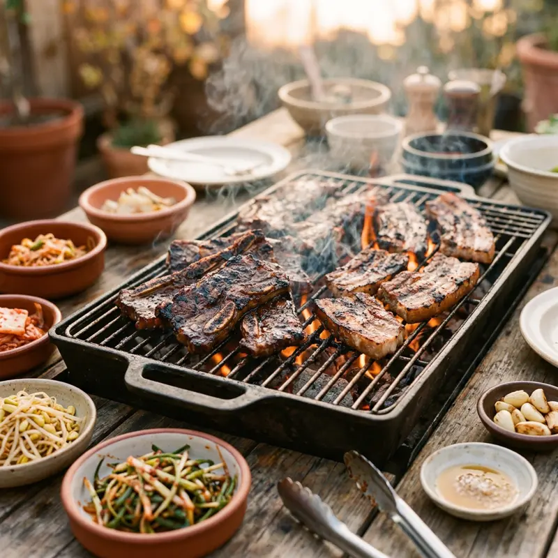

대만의 BBQ는 크게 대만/일본식 숯불구이와 한국식 무한리필 고깃집으로 나뉩니다. 특히 무한리필(吃到飽) BBQ는 여럿이 함께 방문하기 좋아 인기가 높고, 시간제 예약제로 운영되는 곳이 많아요.
무엇이 특별할까요?
01
무한리필 시간제
吃到飽(츠따오빠오) 매장은 보통 90~120분 시간제로 운영돼요.
02
1인 그릴 시스템
혼자서도 즐길 수 있는 개인용 화로 좌석을 갖춘 곳도 많아요.
03
사이드바 활용
음료·디저트바가 무제한인 경우가 많아 충분히 활용하세요.
이렇게 즐겨보세요
- ✓무한리필 매장은 인원수만큼 필수 주문, 예약 권장
- ✓시간 초과 시 추가 요금이 부과될 수 있음
- ✓1인 방문 가능 좌석(개인 화로)이 있는지 사전 확인
- ✓남은 음식은 대부분 포장 불가(잔반 페널티가 있는 곳도 있음)
Real spots
전체 화면 지도로 보기 →
여행자들이 등록한 진짜 맛집
이 카테고리에 실제로 등록된 맛집을 지역별로 모아봤어요. 새로 등록되면 여기에도 바로 반영돼요. 핀을 눌러 추천 투표도 남길 수 있어요.
📍타이베이
📍타이난
📍이란
Join the map
지금 등록하기 →
나만의 맛집을 공유해주세요 🤫
여러분의 발견이 다른 여행자들에게 진짜 대만을 경험하게 해줍니다.